Document template · 文件模板
Document title
中文标题
One or two sentences on what this document is for and who should read it. English first; a Chinese edition of the same document is issued alongside or below.
Purpose · 目的
This page is the house style for Del Mar project documents on slopswap. Project documents open with the navy cover above, carry a running head with the document number, and number their sections. Each requirement carries a status so there is no doubt about who owns it:
Confirmed decided by Del Mar; fixed unless Del Mar changes it
Wolfking Wolfking to design or propose
APCCO APCCO owns or will confirm
Open not yet decided; owner and timing listed
How we work · 工作方式
One shared email thread for all project communication, with Del Mar, Wolfking and APCCO on every message. Detailed questions from APCCO's engineers are for the California permit, not a sign of problems; please answer them directly.
Parties and roles · 各方及职责
| Party | Role in this project |
|---|---|
| Del Mar Seafoods, Inc.Watsonville, CA — owner and operator | Buys the equipment, owns the site and the process. Approves the block size, the layout and the final design before manufacturing. |
| Jiangsu Wolfking Tech Co., Ltd.Nantong, Jiangsu — designer and manufacturer | Designs and manufactures the vertical plate freezers and the ammonia refrigeration package. Supplies the drawings, calculations and certificates the California permits need. |
| APCCO — Applied Process Cooling Corp.Fresno, CA — licensed refrigeration contractor and engineer | Reviews the design for California compliance, stamps and files the permits, installs the delivered equipment and leads start-up with Wolfking. |
Writing conventions · 写作规范
- English first, then Chinese, in the same sentence or the same block. Mark Chinese spans with
lang="zh"so they take a CJK font. - Real units and values, with the source: a Confirmed number came from Del Mar, a Wolfking one is for Wolfking to propose.
- Section headings are numbered automatically. Add
class="plain"to a heading that should not be. - Document numbers follow
DMS-VPF-NNN · Rev Xand appear in the running head, the cover and the file name.